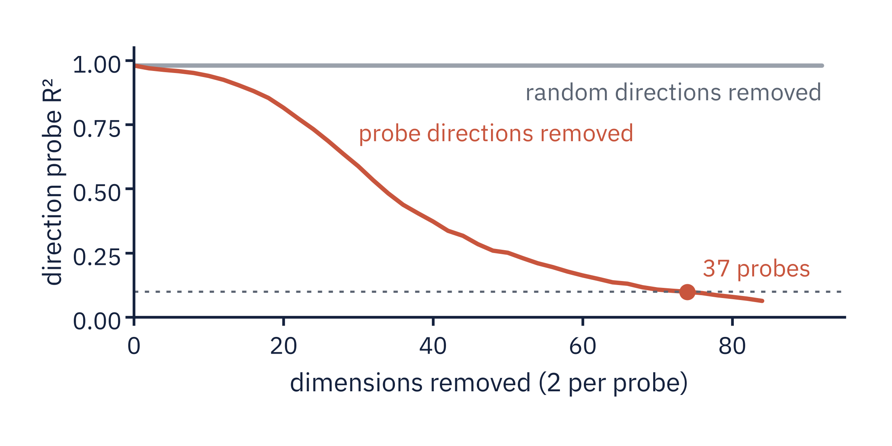

<section id="p1-anisotropy" data-transition="fade" style="background:#FBFBF8; color:#14213D; font-family:'IBM Plex Sans', Arial, sans-serif; padding:128px 128px 160px; display:flex; flex-direction:column; gap:48px">
<h2 style="font-family:'Source Serif 4', Georgia, serif; font-size:56px; font-weight:600; line-height:1.1; letter-spacing:-0.5px; width:1600px">The tens-of-probes count measures anisotropy, not rank</h2>
<div style="display:flex; gap:40px; align-items:center"><div style="width:1164px; background:#FFFFFF; border:1px solid #E4E2DC; border-radius:12px; padding:32px"></div><div style="flex:1; display:flex; flex-direction:column; gap:28px"><table style="width:480px; font-size:28px; color:#14213D"><tr><td style=" width:66%; color:#5B6472">probes to erase</td><td style=" width:34%; font-family:'Source Serif 4', Georgia, serif; font-weight:600; color:#14213D; text-align:right">37</td></tr><tr><td style=" color:#5B6472">one weighted probe, error</td><td style=" font-family:'Source Serif 4', Georgia, serif; font-weight:600; color:#C8553D; text-align:right">3.2°</td></tr><tr><td style=" color:#5B6472">off-target, weighted probe</td><td style=" font-family:'Source Serif 4', Georgia, serif; font-weight:600; color:#14213D; text-align:right">0.03 m/s</td></tr><tr><td style=" color:#5B6472">off-target, random plane</td><td style=" font-family:'Source Serif 4', Georgia, serif; font-weight:600; color:#9AA1AB; text-align:right">4.2 m/s</td></tr></table></div></div>
<p style="position:absolute; left:128px; bottom:64px; width:1664px; font-size:24px; color:#5B6472">Part 1</p>
<aside>~65 s. Sources: results/p1b_direction_direction_meanpool_L9.json, p1b_dims_four_ways.json, p1c_direction_L9.json, p1c_direction_L9_rankmatched.json, p1c_direction_L9_adam_basis.json, p1c_direction_L9_rank2_covweighted.json. Iterative nullspace probing at point 9, which is the paper's layer 8 because the paper counts blocks from zero. Each round fits a probe, removes its directions and refits. With the count nested inside each training fold, so it never reads the test split, it takes 37 probes to bring direction to the stop line, 39 for speed and 41 for acceleration. Scoring each round on the test split, as the paper's protocol does, gives 46, 45 and 47. Removing the same number of random dimensions leaves R squared at 0.980, so the count is not an artefact of removing dimensions. Two things did not reproduce cleanly. Whether speed needs fewer probes than direction depends on the stop rule and the probe recipe: under ridge on the same clips speed needs fewer under C.11's thresholds in 7 of 8 cells, and more under the Figure 22 caption's thresholds in all 8. At the paper's layer 8, our point 9, the caption's R squared below 0.3 stop gives 25 probes under the paper protocol and 23 nested. And the sawtooth: there is no direction-specific sawtooth under ridge or under the paper's Adam recipe; with Adam both curves go jagged, for speed as much as for direction. In raw coordinates the nested count is 1.4 to 1.6 times larger and still equal at point 9, 51 against 55. If asked what the count measures, the next slide is the answer. Same count, measured four ways, at points 9, 12 and 22. The literal count is 37, 64 and 88 probes. After whitening the activations, one two-output probe does the whole job at every point: the code is a rank-2 plane, the sine and cosine of the angle, stretched so that an unwhitened probe sequence needs tens of rounds to exhaust it. Erasing that plane with LEACE drops a ridge probe to zero, but an MLP still reads 0.37 to 0.82 of the variance after erasure, and that nonlinear residual grows toward the output. The second-harmonic share of the ring's power is 0.25, 0.21 and 0.26. Planted controls decide the reading: a sheared ring inflates the literal count to 8 but not the whitened one, three planted copies do not inflate it, and a planted third harmonic is detected. So the probe count measures how stretched a rank-2 linear code is, not its intrinsic rank. This bears on the paper's open question about a harmonic basis for direction, and on the objection that a probe count is not a dimensionality. Step 3 of the paper reproduces: five ridge probes steer to 8.7 degrees, a random basis of the same rank to 57.2, and with the paper's Adam probe sequence it takes 18 probes to get under 10 degrees, against about 12 degrees at around 20 probes in the paper. An addition to the steering result. An edit along one probe's own axis fails: 78 degrees with the ridge probe, 84 with the Adam probe, consistent with the paper's statement that one probe gives more than 80 degrees. Build the edit from the same probe but weight it by the activation covariance, which takes it out of the probe's plane, and it reaches 3.2 degrees. The same construction on random two-dimensional subspaces reaches a median of 4.2 degrees, and the learned probe is not significantly better on target error, p = 0.24. What the learned probe buys is specificity: it moves the off-target speed readout by 0.03 metres per second, against a median of 4.2 for random planes. So the many-probe requirement is a property of the Euclidean edit, and the probes add precision rather than reach. If asked whether this contradicts the paper: no, the paper's edit is Euclidean and the Euclidean result reproduces; this is a different edit.</aside>
</section>
